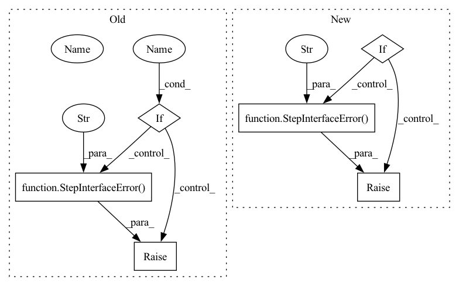

Pattern ID :29354
Before Change
self.__component = None
self.__params = dict()
if args :
raise StepInterfaceError("" ) // TODO: fill
for k, v in kwargs.items():
assert k in self.PARAM_SPECAfter Change
self.__component = None
self.__params = dict()
if args:
raise StepInterfaceError(
"When you are creating an instance of a step, please only "
"use key-word arguments." )
for k, v in kwargs.items():
assert k in self.PARAM_SPEC
try:In pattern: SUPERPATTERN
Frequency: 4
Non-data size: 6
Instances Fragment ID: 86179106
Project Name: maiot-io/zenml
Commit Name: 05d015b19f054a009c2814e3f078d04f8c2e052e
Time: 2021-09-10
Author: baris@maiot.io
File Name: zenml/steps/base_step.py
M Class Name: BaseStep
N Class Name: BaseStep
M Method Name: __init__(1)
N Method Name: __init__(1)
M Parent Class:
N Parent Class:
M File Name: zenml/steps/base_step.py
N File Name: zenml/steps/base_step.py
M Start Line: 44
M End Line: 51
N Start Line: 89
N End Line: 94
Before Change
{SINGLE_RETURN_OUT_NAME: return_spec}
)
if check_dict_keys_match(cls.INPUT_SIGNATURE, cls.OUTPUT_SIGNATURE):
raise StepInterfaceError(
"The input names and output names cannot be the same!"
)
return cls
After Change
// signature does not contain variable **args or **kwargs
variable_arguments = None
if step_function_signature.varargs:
variable_arguments = f"*{step_function_signature.varargs}"
elif step_function_signature.varkw:
variable_arguments = f"**{step_function_signature.varkw}"
if variable_arguments :
raise StepInterfaceError(
f"Unable to create step "{name}" with variable arguments "
f""{variable_arguments}". Please make sure your step "
f"functions are defined with a fixed amount of arguments."
)
step_function_args = step_function_signature.args
// Remove "self" from the signature if it exists Fragment ID: 86179123
Project Name: maiot-io/zenml
Commit Name: 8ad287d81d8ca453fd79c996b7f2afbf977cce59
Time: 2021-11-17
Author: michael.schuster.ffb@googlemail.com
File Name: src/zenml/steps/base_step.py
M Class Name: BaseStepMeta
N Class Name: BaseStepMeta
M Method Name: __new__(4)
N Method Name: __new__(4)
M Parent Class: type
N Parent Class: type
M File Name: src/zenml/steps/base_step.py
N File Name: src/zenml/steps/base_step.py
M Start Line: 85
M End Line: 141
N Start Line: 72
N End Line: 158
Before Change
instance_spec = inspect.getfullargspec(self.__init__)
process_spec = inspect.getfullargspec(self.process)
if instance_spec.varargs is not None:
raise StepInterfaceError(
"As ZenML aims to track all the configuration parameters "
"that you provide to your steps, please refrain from using "
"a non-descriptive parameter definition such as "*args".")
if instance_spec.varkw is not None:
raise StepInterfaceError(
"As ZenML aims to track all the configuration parameters "
"that you provide to your steps, please refrain from using "
"a non-descriptive parameter definition such as "**kwargs"." )
process_args = process_spec.args
process_args.pop(0) // Remove the self
for arg in process_args:After Change
class BaseStep:
def __init__(self, *args, **kwargs):
if args :
raise StepInterfaceError("") // TODO: fill
self.__component = None
self.__params = dict()
self.__input_spec = dict()
self.__output_spec = dict()
self.__param_spec = dict()
process_spec = inspect.getfullargspec(self.process)
process_args = process_spec.args
process_args.pop(0) // Remove the self
from playground.utils.annotations import Input, Output, Param
for arg in process_args:
arg_type = process_spec.annotations.get(arg, None)
if isinstance(arg_type, Input):
self.__input_spec.update({arg: arg_type.type})
elif isinstance(arg_type, Output):
self.__output_spec.update({arg: arg_type.type})
elif isinstance(arg_type, Param):
self.__param_spec.update({arg: arg_type.type})
else:
raise StepInterfaceError("") // TODO: fill
for k, v in kwargs.items():
// TODO: implement handling defaults
assert k in self.__param_spec
try:
self.__params[k] = self.__param_spec[k](v)
except TypeError or ValueError:
raise StepInterfaceError("" )
def __call__(self, **artifacts):
// TODO: Check artifact types
self.__component = convert_to_component(step=self)(**artifacts, Fragment ID: 86179105
Project Name: maiot-io/zenml
Commit Name: 018c5dfb718e7cebff929ade91aefca70afea81f
Time: 2021-08-05
Author: bariscandurak@hotmail.com
File Name: playground/steps/base_step.py
M Class Name: BaseStep
N Class Name: BaseStep
M Method Name: __init__(1)
N Method Name: __init__(1)
M Parent Class:
N Parent Class:
M File Name: playground/steps/base_step.py
N File Name: playground/steps/base_step.py
M Start Line: 10
M End Line: 60
N Start Line: 12
N End Line: 47
Before Change
shared_input_output_keys = set(cls.INPUT_SIGNATURE).intersection(
set(cls.OUTPUT_SIGNATURE)
)
if shared_input_output_keys:
raise StepInterfaceError(
f"There is an overlap in the input and output names of "
f"step "{name}": {shared_input_output_keys}. Please make "
f"sure that your input and output names are distinct."
)
return cls
After Change
if cls.CONFIG_CLASS:
counter.update(list(cls.CONFIG_CLASS.__fields__.keys()))
shared_keys = {k for k in counter.elements() if counter[k] > 1}
if shared_keys :
raise StepInterfaceError(
f"The following keys are overlapping in the input, output and "
f"config parameter names of step "{name}": {shared_keys}. "
f"Please make sure that your input, output and config "
f"parameter names are unique."
)
return cls
Fragment ID: 86179169
Project Name: maiot-io/zenml
Commit Name: ab2898e0e9d168744910eedc84734095e385d92a
Time: 2022-01-12
Author: 36421093+bcdurak@users.noreply.github.com
File Name: src/zenml/steps/base_step.py
M Class Name: BaseStepMeta
N Class Name: BaseStepMeta
M Method Name: __new__(4)
N Method Name: __new__(4)
M Parent Class: type
N Parent Class: type
M File Name: src/zenml/steps/base_step.py
N File Name: src/zenml/steps/base_step.py
M Start Line: 78
M End Line: 176
N Start Line: 78
N End Line: 184